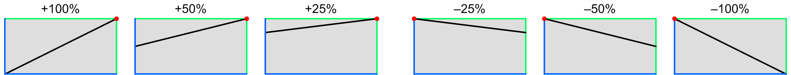
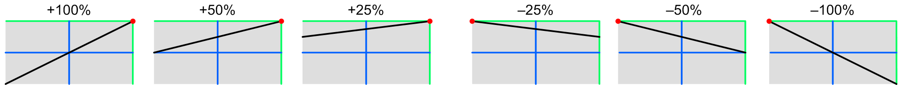
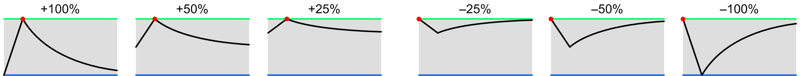
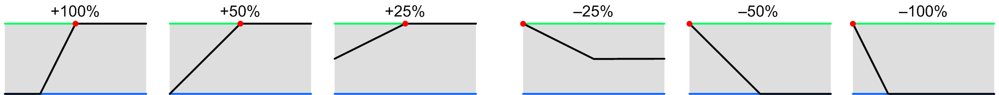

SWEEP amplitude mod depth
These control the amount that the amplitude of each sweep generator is modulated.
The sweep amplitude is normally 100%, and its effective amplitude is controlled by the modulation depth where the sweep is used, e.g., the oscillator mod input. This modulation parameter simply controls how much the selected parameter dynamically affects the amplitude. When this is set to “off” the sweep is at a fixed nominal value. When this is raised to 100%, the mod source can vary it from zero to 100%, or –100% to 100% for bipolar controls.
If the mod select is one of the delay choices, the delay envelope goes from –1 to +1 unit over the delay period, but the negative portion is chopped off so there is no sweep signal for the first half of the delay. If this depth parameter is reduced to 50%, the delay envelope effectively goes from zero to +1 unit, so the sweep starts immediately but rises more slowly.
Unipolar modulation
Most mod sources have a 0 to 1 unit range. The following graphs show the response at various positive and negative depths:
|  |
The blue lines represent 0 units of input and output, and the green lines represent 1 unit of input and output. The red dots show where the curve pivots around, which is different for positive and negative depths. (These dots aren’t shown in the graph in the cluster popup.)
Bipolar modulation
Some mod sources, like the levers, have a –1 to +1 unit range. The following graphs show the response at various positive and negative depths:
|  |
Pitch modulation
The pitch varies from –1 to almost +1 unit across the keyboard, but can go further with octave transposition, and further still via MIDI. The darker regions represent the notes outside the normal keyboard range. As you can see, the most useful settings are lower values, allowing you to introduce a modest variation in sweep amplitude across the keyboard:

|
Envelope modulation
Any of the envelope generators can control the sweep amplitude, if you need something fancier than the sweeps’ own delay envelopes. The following graphs show the resulting waveshape (with time on the X-axis), for a typical envelope; obviously the actual shape depends on how you program the envelope. It is shown for a non-touch-sensitive envelope, with a 0 to 1 unit range, but can be used with touch-sensitive ones as well, producing up to twice the sweep amplitude. Such envelopes aren’t very appropriate with large negative depths, though:
|  |
Delay modulation
When the sweep’s own internal delay generator is used, you get the following responses (with time on the X-axis). Note that lowering the positive depth makes it start earlier. Higher negative depths aren’t particularly useful:
|  |
Toolkit
These are contained in the Sweep amplitude clusters within the Sweep section.
Chroma panel
These are contained in the SWEEP section of the right panel, under the following parameter number:
|
|
These appear in the display as Swp Ampl Mod Depth.
MIDI
These are accessed via the following NRPNs:
| A | 1,10 | |
| B | 2,10 |
Since these are bipolar parameters, the values are offset by 64.
Values
| MIDI | display | ||
| 0 | –100% | ||
| • • • |
• • • |
||
| 64 | off | (default) | |
| • • • |
• • • |
||
| 127 | +100% | (significant) |